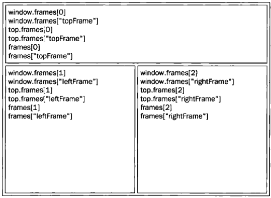

BOM的核心对象是window，它表示一个浏览器的实例。在浏览器中window对象有双重角色，它既是通过javascript访问浏览器窗口的一个接口，又是ECMAScript规定Global对象。
由于window对象同时扮演着ECMAScript中global对象的角色，因此所有在全局作用域声明和变量，函数都会变成window对象的属性和方法。全局变量不能通过delete操作符删除，而直接在window对象上的定义的属性可以。var语句添加的window属性有个名为[[Configurable]],这个值被设置为false因此这样定义的属性不可以通过delete操作符删除
如果页面中包含框架，则每个框架都拥有自己的window对象，并且保存在frames集合中。在frames集合中，可以通过数值索引（从0开始，从上至下，从左到右），或者通过框架名来访问相应的window对象
如实例：
<html>
<head>
<title>Frameset Example</title>
</head>
<body>
<frameset rows="160,*">
<frame src="frame.htm" name="topFrame"></frame>
<frameset cols="50%,50%">
<frame src="" name="leftFrame"></frame>
<frame src="" name="rightFrame"></frame>
</frameset>
</frameset>
</body>
</html>
每个部分访问

var leftPos = (typeof window.screenLeft == 'number') ?
window.screenLeft :
window.screenX;
var topPos = (typeof window.screenTop == 'number') ?
window.screenTop :
window.screenY;
IE9+、Firefox、Safari、Opera 和 Chrome 均为此提供了 4个属性：
innerWidth、innerHeight、outerWidth 和 outerHeight
在 IE、Firefox、Safari、Opera 和 Chrome 中，document.documentElement.clientWidth 和document.documentElement.clientHeight 中保存了页面视口的信息。在 IE6 中，这些属性必须在标准模式下才有效； 如果是混杂模式，就必须通过 document.body.clientWidth 和document.body.clientHeight 取得相同信息。而对于混杂模式下的 Chrome，这些方法都可以取得视口的大小。
取得页面视口的大小的兼容各浏览器方法：
var pageWidth = window.innerWidth,
pageHeight = window.innerHeight;
if (typeof pageWidth != "number") {
if (document.compatMode == "CSS1Compat") {
pageWidth = document.documentElement.clientWidth;
pageHeight = document.documentElement.clientHeight;
} else {
pageWidth = document.body.clientWidth;
pageHeight = document.body.clientHeight;
}
}
window.open()方法,可接收 4 个参数：
通常只须传递第一个参数，最后一个参数只在不打开新窗口的情况下使用
.close()方法
检测调用 window.open()打开的弹出窗口是不是被屏蔽了：
var blocked = false;
try {
var wroxWin = window.open("http://www.wrox.com", "_blank");
if (wroxWin == null) {
blocked = true;
}
} catch (ex){
blocked = true;
}
if (blocked){
alert("The popup was blocked!");
}
要注意的是，检测弹出窗口是否被屏蔽只是一方面，它并不会阻止浏览器显示与被屏蔽的弹出窗口有关的消息。
这2个方法分别可以用clearTimeout()方法和 clearInterval()方法取消间歇调用和超时调用
浏览器通过alert()、confirm()和prompt()方法可以调用系统对话框想用户显示消息。
location 是最有用的 BOM对象之一，它提供了与当前窗口中加载的文档有关的信息，还提供了一些导航功能。事实上，location 对象它既是 window 对象的属性，也是document 对象的属性；换句话说，window.location 和 document.location 引用的是同一个对象。
navigator 对象也有一套自己的属性(通常用于检测网页的浏览器类型，第9章详尽讨论)
下面是navigator 对象的2个主要用途
screen 对象基本上只用来表明客户端的能力，其中包括浏览器窗口外部的显示器的信息，如像素宽度和高度等。
history 是 window对象的属性,它存着用户上网的历史记录，从窗口被打开的那一刻算起。出于安全方面的考虑，开发人员无法得知用户浏览过的 URL。。
浏览器对象模型（BOM）以window 对象为依托，表示浏览器窗口以及页面可见区域。同时，window对象还是ECMAScrip中的Global对象，因而所有全局变量和函数都是它的属性，而且所有原生的构造函数及其它函数也都存在于它的命名空间下
BOM中还有两个对象：screen 和 history： screen对象中保存着与客户端显示器有关的信息，这些信息一般只用于站点分析。history对象 开发人员据此判断历史记录的数量，也可以在历史记录中，向后或向前导航到任意的页面